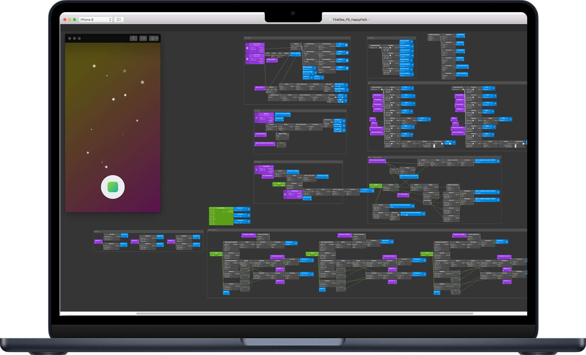

Frame it as a communication problem, not an aesthetic problem.
Fireflies, A Visual Language for Visual Search
Problem: opaque system and model states during scanning
Live camera search only had basic renderings of Harris corners that were not very communicative.
Users didn't know how to react to them and steer the scan to a different outcome.
Solution: Make the Model More Expressive
Release the full potential of the dots as a visual language to guide users through the experience.
The making of Fireflies
I started by diving deep into the customer flows for each feature, then worked with scientists and engineers who built our engine to break the flows down into small moments. For each moment, I list out the messages we should convey to customers. Based on the definition of the moments and the messages needed to be conveyed, I defined the fireflies behaviors. Since I planned to standardize them, I gave each of them a name.

Behavior of an individual firefly

Behavior as a group

I prototyped with Origami Studio to fine tune the behaviors of Fireflies.

Final Design on the Camera Search
Consistent UI across live camera features
Before: Other camera features on Amazon Shopping were all using their own language to talk to our customers, which forced our customers to learn a new language every time they use a different camera feature.

After: This is how camera features across the board look like when fireflies are implemented.

Takeaways
Out-of-the-box idea is fragile. It needs persistent, careful push to overcome skepticism and land on the roadmap.
The right timing and right partner is the key to crack open the shell.